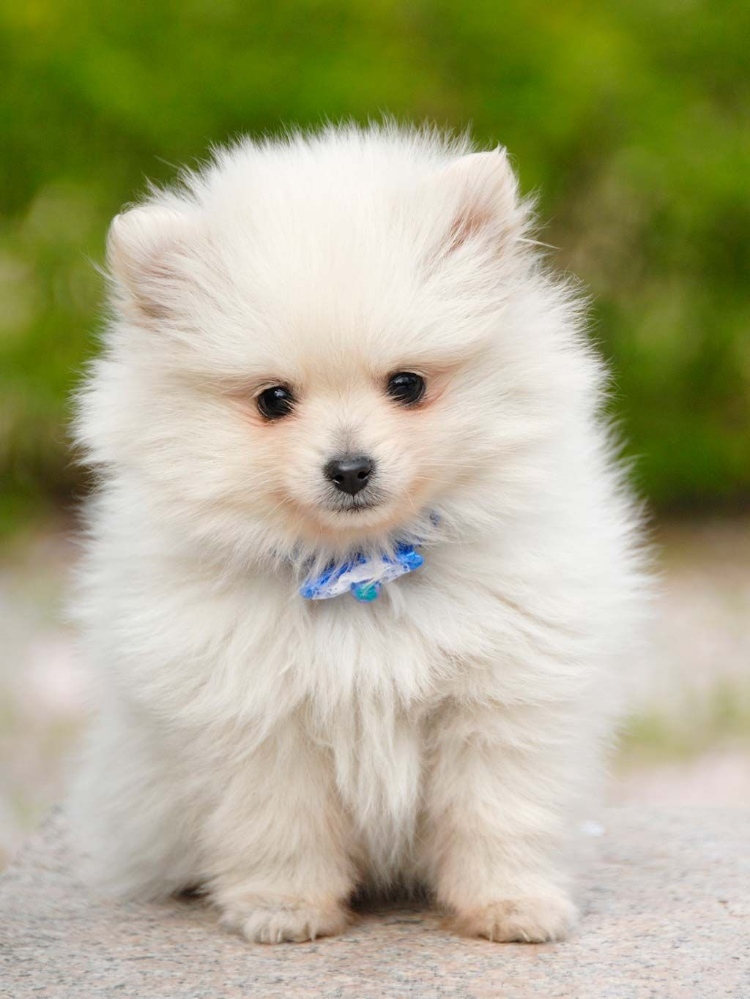
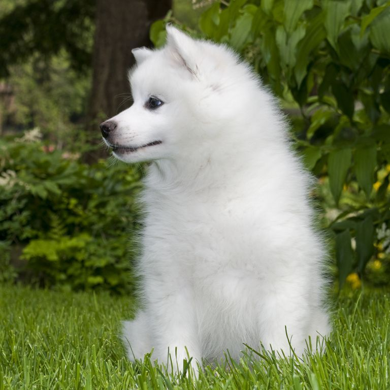
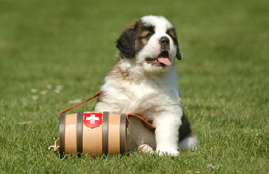
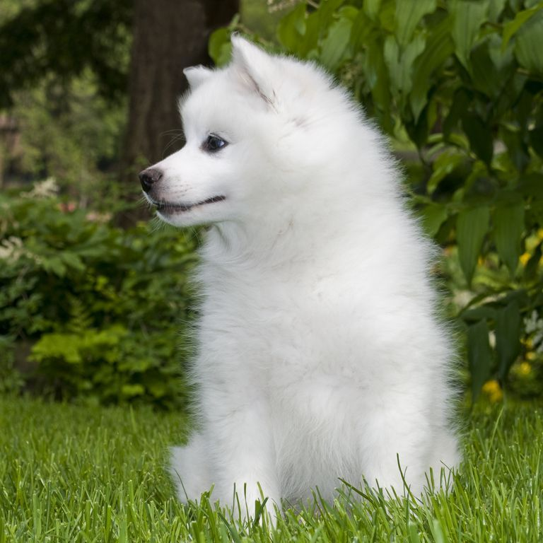
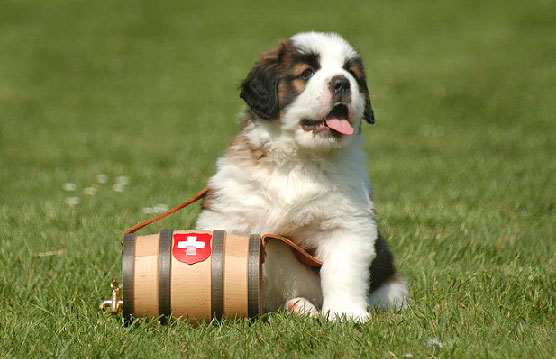

LOS PERROS Y TODAS SUS RAZAS
Los perros son seres sociables y viven en manada con otros perros o con humanos.
suelen vivir unos 13 o 15 años y, algunos como los de raza pequeña, llegan a los 17 años.
la calidad de vida, tanto por la alimentación como por los cuidados de su salud, es un factor de influencia para la expectativa de vida.
Los perros comparten el entorno, los hábitos y el estilo de vida de los humanos
sin embargo la entiedad Federación Cinológica Internacional afirma que existe un total de 343 razas de canes en nuestro planeta.
por eso en este post vamos a ver algunos clasificándolos en razas pequeñas, medianas y grandes.
Clasificacion:

-
Razas Pequeñas
-
Razas Medianas

-
Razas Grandes

-
Razas Gigantes
Algunas caracteristicas de los perros:
-
Los perros son seres sociables y viven en manada con otros perros o con humanos. Suelen vivir unos 13 o 15 años y, algunos como los de raza pequeña, llegan a los 17 años.
La calidad de vida, tanto por la alimentación como por los cuidados de su salud, es un factor de influencia para la expectativa de vida.
-
Los perros machos suelen dejar rastros de orina cuando pasean por lugares ajenos a su hogar, para reconocer el camino a la vuelta o para delimitar su territorio ante otros perros.
El sentido más desarrollado que tienen los perros es el olfato, que resulta un millón de veces más sensible que el de los humanos.Pueden detectar olores apenas perceptibles o distinguir
entre aromas muy similares. A través del olfato interpretan el mundo que los rodea, por ejemplo,obtienen mayor información de la comida a través del olfato antes que por el gusto.
-
Su gran capacidad auditiva permite que sean guardianes y buenos cazadores ya que pueden alertarse a tiempo gracias a su capacidad de captar sonidos muy leves o que provienen de distancias alejadas. Además, su retina percibe mejor el movimiento y la luz en comparación a las personas, aunque no distinguen una gran amplitud cromática.
-
La piel de los perros está compuesta por varias capas. La externa contiene el pelaje y la interna, que es más fina y más sensible que la piel humana, los protege y los ayuda a regular la temperatura de su cuerpo, tanto para el frío como para el calor. Cuando se sienten amenazados o quieren impresionar suelen erizar su pelaje para aparentar una contextura más grande o robusta.
-


Los perros son seres sociables y viven en manada con otros perros o con humanos. Suelen vivir unos 13 o 15 años y, algunos como los de raza pequeña, llegan a los 17 años.
La calidad de vida, tanto por la alimentación como por los cuidados de su salud, es un factor de influencia para la expectativa de vida.
Los perros machos suelen dejar rastros de orina cuando pasean por lugares ajenos a su hogar, para reconocer el camino a la vuelta o para delimitar su territorio ante otros perros.
El sentido más desarrollado que tienen los perros es el olfato, que resulta un millón de veces más sensible que el de los humanos.Pueden detectar olores apenas perceptibles o distinguir
entre aromas muy similares. A través del olfato interpretan el mundo que los rodea, por ejemplo,obtienen mayor información de la comida a través del olfato antes que por el gusto.
Su gran capacidad auditiva permite que sean guardianes y buenos cazadores ya que pueden alertarse a tiempo gracias a su capacidad de captar sonidos muy leves o que provienen de distancias alejadas. Además, su retina percibe mejor el movimiento y la luz en comparación a las personas, aunque no distinguen una gran amplitud cromática.
La piel de los perros está compuesta por varias capas. La externa contiene el pelaje y la interna, que es más fina y más sensible que la piel humana, los protege y los ayuda a regular la temperatura de su cuerpo, tanto para el frío como para el calor. Cuando se sienten amenazados o quieren impresionar suelen erizar su pelaje para aparentar una contextura más grande o robusta.